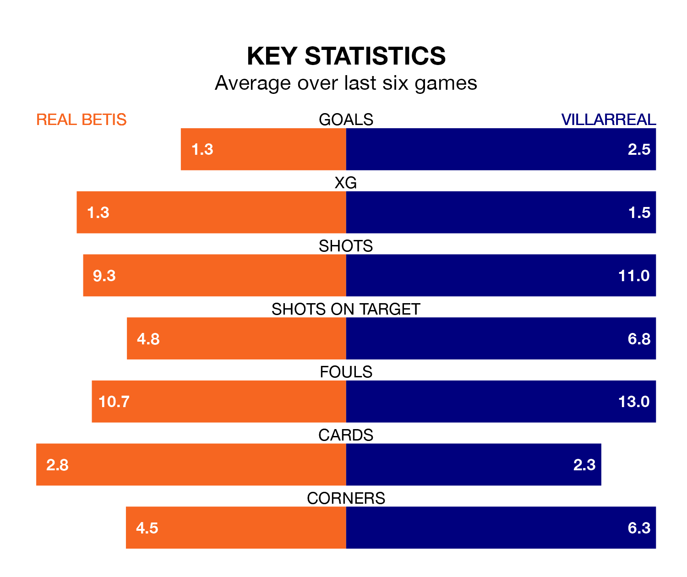

Villarreal face Real Betis on Sunday seeking to protect their long unbeaten run in La Liga.
Villarreal are unbeaten in seven, with three wins and four draws, ahead of the 8pm kick-off.
They face a Betis team who have won three and drawn two over the same number of games.
With 43 goals in 27 games so far this season, Villarreal are scoring more than average in the league with 1.6 goals per game. But they are conceding more than average too, letting in 49 goals at a rate of 1.8 per game.
Betis, meanwhile, are below average scorers, with 1.2 goals per game, compared to a league average of 1.3. They have conceded 1.0 goal per game.
In the last 10 years, Betis and Villarreal have played each other on 17 occasions. Betis won five of them, Villarreal eight, and they drew four times.
On average, Betis scored 0.9 goals and Villarreal 1.5 in those matches.
Their last meeting was on August 13, when Betis won 2-1 away.
The away side's Álex Baena is the league's most creative player, racking up nine assists in 24 appearances so far this season.
For the hosts, Isco, Luiz Henrique and Willian José have set up the most goals, having laid on three assists apiece to date.
Betis are sixth in the table after 27 games, of which they have won 10 and drawn 12, earning 42 points.
Villarreal are six places behind Betis in 12th, with eight wins and eight draws putting them on 32 points.
Betis's last match was on March 3, a 2-1 loss against Atlético Madrid, with William Carvalho getting the goal for Betis.
Villarreal beat Granada CF 5-1 last time out, also on March 3, with Alexander Sørloth (three), Gonçalo Guedes and Étienne Capoue on the scoresheet.
Sunday's match will be refereed by Alejandro José Hernández Hernández, who has taken charge of 11 La Liga games so far this season, issuing four red cards and booking 65 players. He has awarded two penalties.
The last Betis game Hernández Hernández refereed was a 1-1 away draw with Deportivo Alavés on October 8. His last Villarreal match was their 4-3 loss at home against FC Barcelona on August 27.
Updated: 09:34 (UTC), 08/03/24